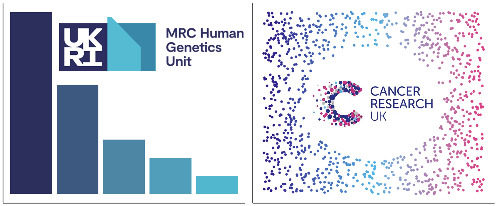
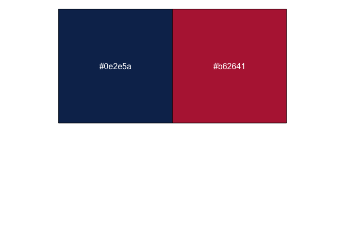

AcademicThemes is a package that provides functionality to allow users to easily colour plots with the colour palettes of various academic institutions. Here are two examples of plots that have been recoloured using colours from the UKRI logo and the Cancer Research UK logo.

This package was made to aesthetically make these plots align with the logo (and by extension colour theme) of different academic institutions. They were not made to be colour blind friendly. Please be mindful of people who are colour blind when making your plots and make sure that all of your figures are as accessible as possible.
Contributing
Contributions are always welcome. If you would like to add functionality to AcademicThemes please do make a PR request or raise an issue. If you would like to add a colour palette then you can raise an issue on GitHub or you can add it yourself. To add a colour palette, fork the AcademicThemes GitHub repository, open R/colour_palettes.R and scroll down to the academic_colour_palette function. The colour palettes are stored at the top of the function in a list
palettes <- list(
...
)To add your own colour palette just add a new entry on this list and everything else will be done for you. However, the new entry must follow a certain form. Here is an example of an entry for the Center for Genomic and Experimental Medicine (CGEM):
cgem_igc = c("#0e2e5a", "#b62641")cgem_igc is the name of the palette. This institute is normally shortened to CGEM but there are many other institutions that could be shortened to the same thing. Therefore, igc was put on the end of the name as it is also a part of the Institute of Genetics and Cancer. This makes cgem_igc a much more descriptive and unique palette name.
c("#0e2e5a", "#b62641") is a description of the palette itself. These are the two colours of the CGEM logo stored in HEX.

HEX codes are stored as a string starting with a hashtag (#) and followed by six characters that are either numbers 0-9 or letters A-F. If you don’t write the colours in valid HEX then your addition will fail when the package is tested and this will result in the palette not being added to the package. In addition, the palette should be added in alphabetical order by name to the colour palette list.
If you do the above and submit a pull request then your palette will be added to AcademicThemes, but there are a couple of other things you can do to make this process easier. After you have added the new palette you can check that it works by running
# install.packages("devtools")
devtools::load_all()
academic_colour_palette("<NEW_PALETTE_NAME>")This should return the vector of colours you input. You can then rebuild the documentation by running
# install.packages("pkgdown")
devtools::document()
pkgdown::build_site()Finally, you can run the package tests
devtools::test()This should result in all of your tests passing. If they don’t pass, check the error message, make sure your new colour palette is written in valid HEX and make sure you have put it in the right place alphabetically in the list.
If you would like to be recognised for your contribution then you can also add yourself as an official contributor. To do so open the file DESCRIPTION and find the lines that read like this
Authors@R:
c(
person("Hugh", "Warden", , "hugh.warden@outlook.com", role = c("aut", "cre"), comment = c(ORCID = "0000-0002-4308-7316"))
)To add yourself, add another entry in the vector of authors like this
Authors@R:
c(
person("Hugh", "Warden", , "hugh.warden@outlook.com", role = c("aut", "cre"), comment = c(ORCID = "0000-0002-4308-7316")),
person("Joe", "Bloggs", , "", role = c("ctb"), comment = c(ORCID = "1234-5678-1234-5678"))
)Notice a couple of things. Firstly, this is a vector, so to add a new entry you have to put a comma after the previous entry (this is easily forgotten). Secondly, you do not have to supply an email address as people will not be contacting you about package maintenance. Thirdly, the role has been changed from role = c("aut", "cre") to role = c("ctb"), this means you will be recognised as a contributor to the package (not an author or a creator). Finally, you don’t have to add an ORCID ID if you don’t have one, this can be left blank.
If you are reading this, thank you for using and contributing to AcademicThemes.